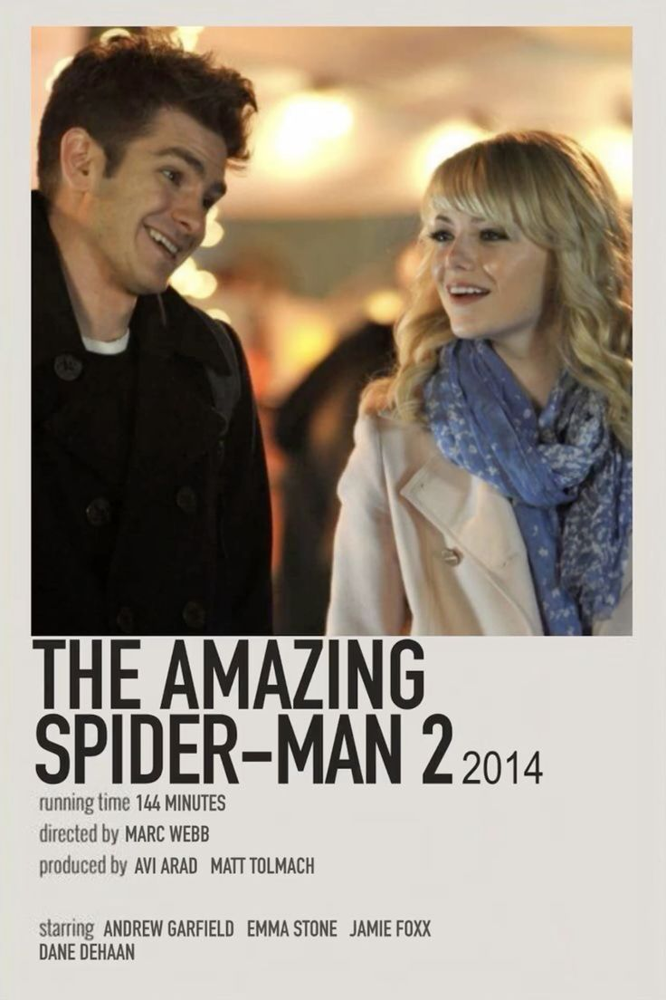

Film ini menceritakan tentang Tom Hansen, seorang pria yang percaya pada cinta sejati, dan Summer Finn, wanita yang tidak percaya pada hubungan serius. Kisah mereka ditampilkan secara tidak linear, melompat-lompat antara hari-hari dalam 500 hari hubungan mereka. Tom jatuh cinta pada Summer sejak awal, menganggapnya sebagai “the one”. Namun bagi Summer, hubungan mereka hanyalah sesuatu yang santai tanpa komitmen. Perbedaan cara pandang ini perlahan menimbulkan konflik, terutama ketika Tom semakin dalam terjebak dalam perasaannya. Seiring waktu, hubungan mereka berakhir, meninggalkan Tom dalam kekecewaan dan kebingungan. Ia kemudian merenungkan kembali setiap momen yang mereka lalui, menyadari bahwa cintanya selama ini lebih banyak dibangun dari harapan dibanding kenyataan. Di akhir cerita, Tom mulai bangkit dan belajar menerima kenyataan, membuka dirinya untuk kesempatan baru dan memahami bahwa tidak semua kisah cinta berakhir seperti yang kita inginkan.
500 Days of Summer

The amazing spiderman 2